1. Модели очередей в вычислительных системах.
Экспоненциальные системы с переменными параметрами.
Зміст
1.1. Очереди в вычислительных системах.
1.2. Структура системы массового обслуживания.
1.3. Типы распределений интервалов между поступлениями заявок и длительности обслуживания.
1.4. Модели, описываемые процессами рождения и гибели.
1.5. Простейшая модель оценки загрузки оператора вычислительной системы.
1.6. Модель многодоступной вычислительной системы.
1.7. Экспоненциальные системы с переменными параметрами.
1.8. Двухфазная модель вычислительной системы с переменным режимом работы.
1.9. Формулы для вычисления стационарных вероятностей.
Методические указания
В данной лекции рекомендуется рассмотреть существующие модели очередей в вычислительных системах, провести их анализ.
Методы решения задач количественного анализа очередей составляют предмет одного из разделов теории вероятностей, известного, под названием теория очередей илитеория массового обслуживания.
Поэтому необходимо рассмотреть основные результаты теории массового обслуживания, применимые к оценке различных показателей качества ВС.
Особое внимание при этом стоит уделить конкретным приложениям рассматриваемых теоретических моделей.
1.1. Очереди в вычислительных системах
С целью повышения загрузки (уменьшения простоев) программных и аппаратных ресурсов
вычислительных си-стем (ВС) современная организация вычислительного процесса
предусматривает возможность создания к ним очередей.
Примерами могут служить очередь заданий, ожидающих распределения памяти, очереди
заданий к центральному процессору и на ввод-вывод.
Ожидающие того или иного вида обслуживания задания (в других случаях это могут быть запросы, сообщения, задачи, про-цессы или программы) будем называть заявками, а устройство, предназначенное для их обслуживания (напри-мер, память, центральный процессор (ЦП), устройство ввода-вывода),- обслуживающим устройством.
В ВС возможны очереди, в которых заявки не являются заданиями в обычном смысле этого слова.
Так, на-пример, в мультипроцессорных ВС, как правило, работать с данным модулем
памяти (производить считывание-запись) в каждый момент времени может только
какой-то один ЦП.
Таким образом, если в процессе работы од-ного из ЦП с некоторым модулем памяти
к тому воз-никает запрос от другого ЦП, то он должен подождать освобождения
этого модуля памяти. Понятно, что в приведенном примере заявками являются запросы
от ЦП, а обслуживающими устройствами - блоки памяти
.
Под обслуживающим устройством не обязательно подразумевать физическое
устройство.
В качестве обслуживающего устройства может выступать и системная программа, которая не может одновременно использоваться более чем одним заданием или процессом. Такие программы называют последовательно используемыми.
Процесс, у которого возникло обращение к последовательно используемой программе
во время ее использования другим процессом, блокируется и должен ждать момента
освобождения этой программы.
Примеры очередей, образующихся в ВС, можно продолжить. Однако и из уже рассмотренных примеров яс-но, что очереди в ВС могут возникать самыми разнооб-разными путями и на различных уровнях.
При количественном анализе очередей в ВС требуемся дать ответ, по крайней мере, на два вопроса: насколько за-гружено рассматриваемое, обслуживаемое устройство, и каково время ожидания заявок в очереди?
Оба крайних случая, когда обслуживающее устройство загружено мало, т. е. подолгу простаивает, и когда загрузка чрезмерно велика, вследствие чего заявки длительное время ожидают обслуживания, требуют принятия корректирующих решений в управлении вычислительным процессом.
По-скольку в ВС многие ресурсы взаимосвязаны, излишняя загрузка одного из них и недостаточная загрузка другого, могут привести к уменьшению пропускной способности ВС в целом.
Методы решения задач количественного анализа оче-редей составляют предмет одного из разделов теории вероятностей, известного, под названием теория очередей или теория массового обслуживания.
Далее рассмотрим основные результаты теории массового обслуживания, применимые
к оценке различных показателей качества ВС.
Особое внимание при этом уделяется конкретным приложениям рассматриваемых теоретических моделей.
1.2. Структура системы массового обслуживания
Хотя ВС представляет собой взаимосвязанную сово-купность вычислительных ресурсов, в ряде случаев основной интерес представляет задача оценки загруженно-сти одного из этих ресурсов, например, центрального процессора, накопителя на магнитных дисках или оператора вычислительной установки.
Эту задачу можно решать в рамках моделей систем массового обслуживания, с одним обслуживающим устройством, методы исследования кото-рых составляют наиболее развитый и завершенный раз-дел теории.
Основные элементы системы массового обслуживания (СМО) показаны на рис. 3.1.

Рис. 3.1. Структура системы массового обслуживания.
Обслуживаемой единицей в СМО является заявка.
Заявки поступают на обслуживающее устройство.
Если поступающие в СМО заявки не могут быть удовлетворены немедленно, то возникает
очередь.
Заметим, что очередь присуща не всякой СМО.
Существуют такие СМО, в которых очередь не допускается и заявка, заставшая
обслуживающее устройство занятым, теряется.
Если в момент поступления заявки обслуживающее устройство занято, то заявка занимает очередь к нему, где ожидает начала обслуживания.
Выбор заявки на обслуживание в какой-то момент времени производится в соответствии с некоторым правилом, которое называется дисциплиной обслуживания.
Далее выполняется обслуживание заявки, и после завершения обслуживания заявка покидает систему.
Выходящий поток обслуженных заявок может оказаться весьма важным в тех случаях, когда он является входящим для другой СМО.
Так, например, программы могут попеременно требовать обслуживания центрального процессора и процессора (устройства) ввода-вывода.
И так рассмотрим элементы СМО такие, как входящий поток заявок, механизм обслуживания и дисциплина обслуживания.
Входящий поток заявок
Заявки выбираются из некоторой совокупности или источника заявок.
Эта сово-купность может быть конечной или бесконечной.
В последнем случае математическая модель СМО будет более простой.
Поэтому предположение о бесконечности источ-ника заявок часто делается даже в случае конечного, но достаточно большого числа заявок в исходной совокупности.
Другой важной характеристикой входящего потока за-явок является статистическая картина поступлений зая-вок во времени.
Самую простую статистическую картину дает регулярный входящий поток, когда заявки посту-пают в равноотстающие друг от друга моменты времени.
Если интервал времени между поступлениями заявок равен  ,
то интенсивность поступления заявок (в единицу времени) есть 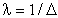.
,
то интенсивность поступления заявок (в единицу времени) есть 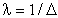.
Представление о регулярном входящем потоке не только не соответствует числу реальных предположений, но и не является наиболее простым с точки зрения получения аналитических результатов.
Простейшим с аналитической точки зрения и соответствующим многим приложениям является предположение о совершенно случайной картине поступления заявок, описываемой пуассоновским процессом.
Более точно, входящим потоком заявок называется неубывающий случайный процесс X(t), принимающий целочисленные значения, равные числу заявок, поступивших за промежуток времени (0, t).
Пуассоновский случайный процесс получается при следующих предположениях.
Пусть вероятность поступления одной заявки в течение любого интервала времени
h равна  ,
,
где  - интенсивность поступления
заявок (т. е. среднее число заявок, поступающих за единицу времени)
- интенсивность поступления
заявок (т. е. среднее число заявок, поступающих за единицу времени)
и вероятность поступления за этот интервал двух или более заявок составляет
o(h)
(Символ o(h) используется, как обычно, для обозначения величины, стремящейся
к нулю быстрее, чем h, т. е.
lim о (h) / h == 0. В частности, о (h) + о (h) == o(h)).
Отсюда вероятность отсутствия новых заявок в интервале времени длины h равна
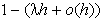.
Говоря о совершенно случайной картине поступления заявок, мы имели в виду следующее свой-ство: события, заключающиеся в поступлении или не поступлении заявки на интервале времени длины h, статистически независимы для любых двух непересекающихся интервалов.
При сделанных предположениях поступление заявки на интервале времени длины h можно рассматри-вать как "успех" в схеме, испытаний Бернулли и число поступивших заявок за, интервал времени (0, t), где t=mh, приближенно равно числу успехов в т испытаниях Бернулли, которое имеет биномиальное распределение:

Полагая  , а
, а  и
сохраняя при этом величину mh=t постоянной, получим, что число поступивших
заявок Х(t) на интервале времени (0, t) имеет распределение вероятностей
и
сохраняя при этом величину mh=t постоянной, получим, что число поступивших
заявок Х(t) на интервале времени (0, t) имеет распределение вероятностей

которое называется распределением Пуассона.
Механизм обслуживания
Второй компонентой СМО является количественная характеристика обслуживания,
требуемого отдельной заявкой. Назовем эту характеристику длиной заявки.
Единица измерения длины заявки меняется в зависимости от природы обслуживающего
устройства и заявок.
Если обслуживающее устройство - ЦП, а заявки - программы, то длина может измеряться
в командах.
Если обслуживающее устройство - линия передачи данных, а заявки - передаваемые
сооб-щения или данные, то длина может измеряться в битах или байтах.
Если совокупность заявок однородна, то предполагается, что длины различных
заявок являются независимыми в совокупности и одинаково распределен-ными случайными
величинами.
В более сложных ситуациях заявки можно разделить на несколько различных типов, каждый из которых составит однородную совокупность заявок.
Чтобы задать механизм обслуживания полностью, помимо распределения длин заявок необходимо также задать быстродействие обслуживающего устройства.
Обозначим величину быстродействия через С.
Единица измерения быстродействия зависит от типа обслуживания.
Если обслуживающее устройство - ЦП, то быстродействие измеряется в операциях в секунду.
Если обслуживающее устройство - канал или линия передачи данных, то быстродействие, т. е. скорость передачи данных, измеряется в битах в секунду.
Если длина заявки равна S [единиц обслуживания] и она обслуживается устройством с быстродействием С [единиц обслуживания в секунду], то отношение S/C {секунд] называется длительностью обслуживания заявки.
Его среднее значение 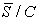[секунд] называется средней длительностью обслуживания, а обратная к ней величина 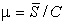называется интенсивностью обслуживания.
Если С постоянно, то можно не делать различия между длиной заявки и
длительностью ее обслуживания и в этом случае будем полагать, что С=1.
Тем самым длина заявки измеряется в единицах времени.
Пусть  - длительность обслуживания
k-й. заявки.
- длительность обслуживания
k-й. заявки.
Если случайные величины 
 ,
независимы в совокупности, одинаково распределены и не зависят от входящего
потока, то такое обслуживание называется рекуррентным.
,
независимы в совокупности, одинаково распределены и не зависят от входящего
потока, то такое обслуживание называется рекуррентным.
В некоторых случаях быстродействие меняется в за-висимости от загрузки обслуживающего устройства.
В качестве примера рассмотрим СМО с l обслуживающими устройствами и общей очередью.
Поступившая заявка обслуживается любым свободным обслуживающим устройством.
Для простоты предположим, что все обслуживающие устройства имеют одинаковое быстродействие, скажем, С.
Определим состояние СМО как число находящихся в ней заявок n (как на обслуживании, так и в очереди).
Тогда общее быстродействие станции обслуживания, состоящей из l обслуживающих устройств, зависит от состояния п и определяется формулой
С{п)=С min{n, l).
Дисциплина обслуживания
Наиболее простой и хорошо известной является дисциплина обслуживания "первый пришел-первый обслужен", при которой заявки обслуживаются полностью без прерываний в порядке их поступления, причем заявка, поступившая в момент простоя обслуживающего устройства, сразу же начинает обслуживаться.
Легко представить себе ситуации, когда эта дисциплина нежелательна. Например, часто бывает, что одни заявки важнее других и заслуживают предпочтительного обслуживания.
Разделение заявок на группы, по степени их важности осуществляется с помощью приоритетных дисциплин обслуживания, и соответствующая система массового обслуживания называется системой с приоритетами.
Правило назначения приоритетов определяет порядок, в котором будут обслуживаться ожидающие заявки.
Приоритетные дисциплины обслуживания бывают двух типов: с абсолютными приоритетами и с относительными приоритетами.
Если обслуживание текущей заявки прерывается при появлении заявки с более высоким приоритетом и последняя немедленно начинает обслуживаться, то говорят, что имеет место дисциплина обслуживания с абсолютными приоритетами.
Если прерывание обслуживания не допускается, то имеет место дисциплина обслуживания с относительными приоритетами.
1.3. Типы распределений интервалов между поступлениями заявок и длительности обслуживания
1. Экспоненциальное распределение - самое простое для получения аналитических результатов. При экспоненциальном распределении длительности обслуживания величина, обратная к средней длительности обслуживания является интенсивностью обслуживания.
2. Гамма-распределение и распределение Эрланга - наблюдается в системе, состоящей из нескольких последовательно соединенных устройств и обслуживания новой заявки. На первом этапе может начаться только в момент ухода заявки из системы после завершения последнего этапа. Тогда общая длительность обслуживания заявки на всех этапах имеет распределение Эрланга.
3. Гиперэкспоненциальное распределение - описывает распределение длительности обслуживания заявки в системе из совокупности параллельных устройств.
Для определения типа системы массового обслуживания часто используются обозначения вида A/B/l, где символы A и B обозначают входящий поток и распределение длительности обслуживания соответственно, а l- число параллельных устройств обслуживания в СМО.
В случае ограничения на допустимое число заявок используется дополнительный параметр - A/B/l/m.
Например, под системой M/M/1 понимается СМО с одним обслуживающим прибором, пуассоновским входящим потоком и экспоненциально распределенной длительностью обслуживания.
Показатели качества
Математическая модель реальной системы строится для того, чтобы оценить какие-то показатели качества этой системы.
Для систем с очередями необходимо, прежде всего, оценить загруженность системы.
Простейшей мерой загруженности является нагрузка  :
:

Если величины, стоящие в числителе и знаменателе этого отношения, равны соответственно
 и
и  то 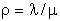.
то 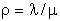.
Если нагрузка превосходит единицу, то это означа-ет, что заявки поступают быстрее, нежели их успевает обрабатывать обслуживающее устройство.
В СМО с l параллельными обслуживающими устройствами на каждое из них приходится
в среднем  заявок в единицу
времени.
заявок в единицу
времени.
Поэтому нагрузка в такой СМО может быть поднята до величины I.
С нагрузкой тесно связан другой показатель качества - коэффициент использования, или коэффициент загрузки обслуживающего устройства.
Этот показатель качества, обозначаемый через u, определяется как доля времени, в течение которого обслуживающее устройство занято.
Рассмотрим достаточно длительный интервал времени Т. В СМО с l обслуживающими
устройствами на каждое из них в среднем за время Т придется по  заявок в предположении, что поток заявок равномерно распределяется по I устройствам.
заявок в предположении, что поток заявок равномерно распределяется по I устройствам.
Поскольку каждая заявка требует в среднем длительности обслуживания  ,
то общее среднее время занятости обслуживающего устройства составит 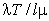.
,
то общее среднее время занятости обслуживающего устройства составит 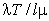.
Поделив эту величину на Т, получим  .
.
Поскольку обслуживающее устройство не может быть занято более 100 % времени, то коэффициент использования не может превосходить единицу.
Таким образом, получаем следующее выражение для коэффициента использования СМО с I обслуживающими устройствами:
 .
.
При анализе моделей вычислительных систем одним из основных показателей качества служит пропускная способность.
Эта величина определяется как среднее число заявок, обслуженных за единицу времени.
В СМО с I обслуживающими устройствами за каждую единицу времени в среднем завершается
обслуживание  заявок, откуда
вытекает, что пропускная способность равна
заявок, откуда
вытекает, что пропускная способность равна
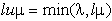
Таким образом, пропускная способность совпадает с интенсивностью поступления
заявок  до тех пор, пока
до тех пор, пока
 меньше максимальной интенсивности
обслуживания
меньше максимальной интенсивности
обслуживания  , выше которой
пропускная способность не поднимается.
, выше которой
пропускная способность не поднимается.
С точки зрения заявки самым важным показателем качества, по-видимому, является время, которое она проводит в ожидании обслуживания.
Определим время ожидания Wj заявки j, равным отрезку времени от момента ее поступления в систему до момента начала ее обслуживания, а время ответа Тj, равным отрезку времени от момента поступления заявки j в систему до момента завершения ее обслуживания.
Таким образом, имеем следующее простое соотношение (индекс j опущен):
Время ответа (Т) == время ожидания (W) + длительность обслуживания (S).
Последней интересующей нас мерой загруженности является "длина очереди".
Пусть случайный процесс Q(t) есть число заявок, ожидающих обслуживания в момент времени t.
Аналогично, определим N(t) как число заявок, находящихся в системе либо в очереди, либо на обслуживании.
Процесс N(t) называют длиной очереди.
В СМО с I обслуживающими устройствами Q(t) и N{t) связаны соотношением
Q(t)= max(0, N(t)-1).
Изучение распределения числа заявок, ожидающих обслуживания, требуется, например, при оценке объема буферной памяти, необходимой для размещения поступающих заявок.
Процессы Q{t) и Ni(t) - это случайные процессы с не-прерывным временем.
Предположим, что
 - интенсивность поступления
заявок в СМО и
- интенсивность поступления
заявок в СМО и
Sср - средняя длительность обслуживания заявки.
Тогда: интенсивность обслуживания заявок работающим устройством есть  , а интенсивность выходящего потока заявок в произвольный момент времени равна
, а интенсивность выходящего потока заявок в произвольный момент времени равна
 ,
,
где 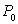 - вероятность простоя
обслуживающего устройства в установившемся режиме,
то есть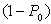 - вероятность того,
что устройство работает.
Поскольку в установившемся режиме интенсивность ухода обслуженных заявок из
системы совпадает с интенсивностью поступления заявок в систему, то .
.
Отсюда:
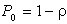,
где  - нагрузка или коэффициент
использования обслуживающего устройства.
- нагрузка или коэффициент
использования обслуживающего устройства.
Две из самых важных формул теории массового обслуживания отражают связь между средним временем ответа (временем ожидания) и средним числом заявок, находящихся в системе (ожидающих обслуживания)
 ,
,  ,
,
где
N - длина очереди (заявки, находящиеся в системе);
Q - число заявок, ожидающих обслуживания;
T - время ответа;
W - время ожидания.
1.4. Модели, описываемые процессами рождения и гибели
Определение процесса рождения и гибели начнем с введения формулы:
N(t)=A(t)-D(t),
которая будет описывать число заявок системе, при этом будем считать:
 - момент времени, завершения
заявки j.
- момент времени, завершения
заявки j.
Пусть D(t) будет процессом, которой в момент времени t будет
принимать значения равные числу всех моментов  ,
которые предшествовали значению t. и определим процесс D(t), как
считающий процесс. A(t) - процесс, который будет принимать значение числа
заявок, поступивших в систему на интервале времени (0, t).
,
которые предшествовали значению t. и определим процесс D(t), как
считающий процесс. A(t) - процесс, который будет принимать значение числа
заявок, поступивших в систему на интервале времени (0, t).
Если же под N(t), в каждый момент времени мы будем понимать размер некоторой популяции, то под процессом A(t) можно понимать общее число точек рождения до времени t, а D(t)- как число погибших членов популяции. Исходя из этого определения N(t)- можно назвать процессом гибели и рождения.
Случайный процесс N(t) (число заявок, ожидающих обслуживание в момент времени t ) будет называться процессом рождения и гибели, если его переходные вероятности:
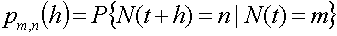;
не будет зависеть от t (будут стационарны) и будут удовлетворять четырем условиям:


для  .
.
где 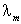 - интенсивность рождения и 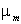 - интенсивность гибели в состоянии m=0,1,2, принимаемые процессом N(t).
0(h) - вероятность последнего события, стремящаяся к нулю быстрее, чем h.
Введем понятие  - вероятность
того, что N(t) находится в состоянии n в момент времени t:
:
- вероятность
того, что N(t) находится в состоянии n в момент времени t:
:
 , чтобы 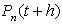
найти, заметим, что N(t)=n. в момент времени (t+h) тогда, если
выполняется одно из условий:
, чтобы 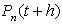
найти, заметим, что N(t)=n. в момент времени (t+h) тогда, если
выполняется одно из условий:
N(t)=n и за время (t, t+h) не происходит никаких изменений;
в момент времени t, N(t)  n
n
 n взаимно исключают
друг друга
n взаимно исключают
друг друга
в момент времени t, N(t) n+
n+
в момент времени (t, t+h) осуществляется два или более перехода в n.
Поэтому из четвертого условия следует:
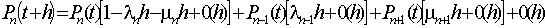
Если обе части уравнения разделить на h, и из правой в левую перенести
 , учитывая, что h
, учитывая, что h 0,
получим выражение:
0,
получим выражение:
 ; (3.1)
; (3.1)
Это уравнение выполняется при п 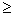 1. Если принять n=0, мы получим уравнение вида:
 ; (3.2)
; (3.2)
Если в начальный момент времени N(0)=i, то выполняется условие  ,
,
 при 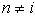.
Таким образом, мы получили условия существования (3.1) и единства (3.2) решения
системы.
при 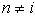.
Таким образом, мы получили условия существования (3.1) и единства (3.2) решения
системы.
Чтобы случайный процесс N(t) назывался процессом рождения и гибели,
нужно найти установившееся (не зависящее от t ) распределение вероятности
 , которое удовлетворяло бы
двум выведенным решениям.
, которое удовлетворяло бы
двум выведенным решениям.
Чтобы доказать это, надо ввести следующее определение: установившееся решение (если существует такое распределение) единственно и для каждого состояния n.
 для нахождения
для нахождения  (n=0,
1, 2...) можно использовать систему
(n=0,
1, 2...) можно использовать систему  линейных уравнений:
линейных уравнений:
 ; (3.3)
; (3.3)
которые выводятся из уравнения (3.1) с условием, что  .
.
 ; (3.4)
; (3.4)
где с - постоянная, n=1,2,.... Из (3.2) следует  ,
следовательно, с=0 в (3.4) и получается следующая система рекуррентных
уравнений:
,
следовательно, с=0 в (3.4) и получается следующая система рекуррентных
уравнений:
 , (3.5)
, (3.5)
где левая часть - это интенсивность перехода из n в n-1, а правая часть это интенсивность перехода из n-1 в n. Отсюда при условии балансировки граф переходов будет выглядеть так:

Рис.3.2. Граф переходов
Теперь же стационарные вероятности будут вычисляться рекуррентно:
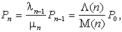 (3.6)
где  ,
,  (3.7)
(3.7)
определяется
по условию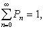, так как  - распределение вероятностей. Таким образом, если ряд:
- распределение вероятностей. Таким образом, если ряд:
 , (3.8)
, (3.8)
сходится, то, обозначая его сумму через  ,
получим
,
получим
 (3.9).
(3.9).
Для примера процессов рождения и гибели назовем и кратко определим несколько СМО:
Простейшая система М/М/1
Рассмотрим СМО с одним обслуживающим устройством, пуассоновским
входящим потоком с параметром  и экспоненциально распределенной с параметром
и экспоненциально распределенной с параметром  длительностью
обслуживания. Легко видеть, что число заявок N(t), находящихся в системе
М/М/1 в момент времени t , описывается процессом рождения и гибели с
длительностью
обслуживания. Легко видеть, что число заявок N(t), находящихся в системе
М/М/1 в момент времени t , описывается процессом рождения и гибели с
 и
и  (n=1, 2, ...). В этом случае рекуррентное соотношение (3.6) принимает
вид:
(n=1, 2, ...). В этом случае рекуррентное соотношение (3.6) принимает
вид:  , где
, где  .
Опираясь на формулы, выведенные для процесса рождения и гибели:
.
Опираясь на формулы, выведенные для процесса рождения и гибели:
 - средняя
длина очереди;
- средняя
длина очереди;
 - стационарная
вероятность того, что в системе находится n заявок.
- стационарная
вероятность того, что в системе находится n заявок.
Система М/М/1 с одноуровневым управлением
Рассмотрим систему М/М/1, в которой интенсивности поступления
заявок  и их обслуживания
и их обслуживания
 зависят от длины очереди
следующим образом:
зависят от длины очереди
следующим образом:
 (3.10)
(3.10)
Такое изменение интенсивностей входящего потока и обслуживания естественно назвать одноуровневым управлением.
В случае наличия ограничения на количество заявок в очереди m для системы M/M/1/m стационарное распределение имеет вид:
 , n = 0,
1, ..., m
, n = 0,
1, ..., m
Двухфазная модель вычислительной системы
Одной из простейших моделей мультипрограммной ВС с постоянным уровнем мультипрограммирования является замкнутая двухфазная СМО, представлена на рис. 3.3.

Рис.3.3. Замкнутая двухфазная СМО
Первое обслуживающее устройство интерпретируется как центральный процессор (ЦП), второе как устройство ввода-вывода (УВВ), объединяющее канал и внешнюю память (ВП), а заявками являются m программ, одновременно находящихся в оперативной памяти. Предполагается, что в процессе выполнения каждой программы возникают запросы к ВП, что соответствует перемещению заявки в рассматриваемой СМО из очереди 1 в очередь 2. После удовлетворения запроса к ВП программа готова к выполнению ЦП и этому соответствует перемещение заявки из очереди 2 в очередь 1. Предполагается, что длительности обслуживания заявок независимы между собой, на каждой фазе в отдельности и на различных фазах и что обслуживание заявок происходит в порядке их поступления.
Система М/М/l/
Пусть N(t) - число заявок, находящихся на обслуживании
в момент времени t. Если N(t)=n  l, то n заявок одновременно обслуживаются различными обслуживающими
устройствами. Если же N(t)=n> l, то в системе будут ожидать обслуживания
n-l заявок. В такой ситуации имеем процесс рождения и гибели с параметрами
l, то n заявок одновременно обслуживаются различными обслуживающими
устройствами. Если же N(t)=n> l, то в системе будут ожидать обслуживания
n-l заявок. В такой ситуации имеем процесс рождения и гибели с параметрами
 (n=0, 1, 2...),
(n=0, 1, 2...),
 .
.
Система с квазислучайным источником заявок
Рассматриваемая в этом пункте задача известна в литературе как
задача об обслуживании (ремонте) одним мастером (оператором) К машин.
Каждая машина может находиться в одном из двух состояний: "рабочем" и "нерабочем"
(требующем ремонта). При поломке машины, приводящей к нерабочему состоянию,
она становится в очередь на ремонт. Если мастер (обслуживающий устройство) свободен,
то он немедленно приступает к ремонту (обслуживанию) машины; в противном случае
поломанная машина должна ждать обслуживания. Пусть любая исправная машина может
сломаться в промежуток времени (t, t+h) с вероятностью vh+0(h)
и поломки исправных машин происходят независимо от состояний других машин. Таким
образом, если машина исправна в момент времени t, то промежутки времени
от t до момента ее поломки имеют экспоненциальное распределение 1/v.
При этих предположениях говорят, что К машин образуют квазислучайный
источник заявок. Легко видеть, что общий поток заявок (поломок) от К
независимых источников (машин) будет процессом только рождения  с интенсивностью
с интенсивностью
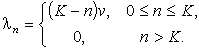 (3.11)
Предположим далее, что длительности обслуживания распределены
экспоненциально со средним  .
Таким образом, число заявок N(t), находящихся в системе в момент времени
t, являются процессом рождения и гибели с интенсивностью рождения (указанной
выше) и интенсивностью гибели
.
Таким образом, число заявок N(t), находящихся в системе в момент времени
t, являются процессом рождения и гибели с интенсивностью рождения (указанной
выше) и интенсивностью гибели
 =
= (n1).
(n1).
1.5. Простейшая модель оценки загрузки оператора вычислительной системы
ВС, работающая под управлением операционной системы, генерирует сообщения, требующие действий оператора. При интенсивной загрузке ВС и поддержания уровня мультипрограммирования, равного четырем - шести, в среднем за час на системную консоль поступает несколько сот различных сообщений. Для оценки загрузки оператора можно применить рассмотренную в предыдущем пункте модель, если считать, что числу машин К соответствует уровень мультипрограммирования (т.е. число программ, одновременно находящихся в оперативной памяти), а обслуживающему устройству (мастеру) соответствует оператор, реагирующий на сообщения (заявки), поступающие от программ (источника заявок).
1.6. Модель многодоступной вычислительной системы
Рассматриваемая модель схематически показана на рис. 3.4. Здесь К машинам соответствует К терминальных пользователей, а мастеру - многодоступная вычислительная система, т.е. ВС, обслуживающая некоторую совокупность терминалов, поломке машины соответствует издание запроса к ВС с терминала.

Рис. 3.4.Модель многодоступной вычислительной системы
Общие свойства
Пусть  - пропускная
способность. Т.е. число заявок, завершающих обслуживание в единицу времени в
рассматриваемой системе. Тогда интенсивность поступлений и уходов заявок из
блока, очерченного на рис. 5 пунктиром, равна
- пропускная
способность. Т.е. число заявок, завершающих обслуживание в единицу времени в
рассматриваемой системе. Тогда интенсивность поступлений и уходов заявок из
блока, очерченного на рис. 5 пунктиром, равна  .
Определим случайную величину U как время обдумывания пользователя, равное
интервалу времени с момента завершения выполнения его предыдущего запроса к
ВС до момента издания им следующего запроса к ВС, и время ответа Т как
интервал времени с момента издания запроса пользователем (ввода с терминала)
до момента завершения его выполнения системой. Время ответа и время обдумывания
в сумме составляют цикл одного взаимодействия пользователя с ВС. Из формулы
Литтла получаем
.
Определим случайную величину U как время обдумывания пользователя, равное
интервалу времени с момента завершения выполнения его предыдущего запроса к
ВС до момента издания им следующего запроса к ВС, и время ответа Т как
интервал времени с момента издания запроса пользователем (ввода с терминала)
до момента завершения его выполнения системой. Время ответа и время обдумывания
в сумме составляют цикл одного взаимодействия пользователя с ВС. Из формулы
Литтла получаем  , т.е. среднее
значение цикла одного взаимодействия пользователя с ВС в установившемся режиме
, т.е. среднее
значение цикла одного взаимодействия пользователя с ВС в установившемся режиме

Отметим, что это соотношение имеет место при любой дисциплине обслуживания. Для его справедливости не требуется также независимости времен обдумывания U и специальных предположений о виде их распределения. Все что требуется - это существование установившегося режима СМО.
Пусть - вероятность
простоя обслуживающего устройства в установившемся режиме и S - средняя
длительность обслуживания одного запроса. Тогда в установившемся режиме обслуживающее
устройство может обработать  запросов в единицу времени, т.е.
запросов в единицу времени, т.е.
 .
.
Это соотношение также справедливо при, весьма, общих условиях. Единственное ограничение состоит в том, чтобы обслуживающее устройство не простаивало при наличии не обслуженных заявок, иначе длительности обслуживания заявок будут зависеть от дисциплины обслуживания.
Среднее время ответа:

Определим интенсивность обслуживания:  =1/S
и интенсивность поступления заявок (запросов):
=1/S
и интенсивность поступления заявок (запросов):  .
Обозначим их отношение через
.
Обозначим их отношение через  ,
т.е.
,
т.е.
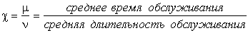 .
Тогда нормированное среднее время ответа (т.е. T/S) равно
 .
.
При выводе последней формулы опять не делалось никаких специальных
предположений. Эта формула верна практически при любых предположениях : распределения
U и S могут быть произвольными, а дисциплина обслуживания - любой,
не допускающей простоев обслуживающего устройства при наличии не обслуженных
заявок. Более того, времена обдумывания U и длительности обслуживания
S не обязательно должны быть последовательностями независимых одинаково
распределенных случайных величин. Средняя длина очереди в установившемся режиме
N (число заявок (запросов), ожидающих и находящихся на обслуживании)
получается из формулы Литтла: 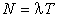,
что можно переписать, как  .
.
Время ответа
Качество обслуживания отдельного терминального пользователя характеризуется средним временем ответа системы. Обозначая нормированное среднее время ответа через Y(K), в разделе "Система с квазислучайным источником заявок" имеем:
 .
.
Подставляя в последнюю формулу выражение (3.2) для  ,
получим
,
получим
 .
.
Для вычисления Y(K) удобно воспользоваться следующим рекуррентным соотношением:

Плотность распределения времени ответа получаем в результате свертки плотности :

и плотности распределения S :

Численные значения распределения можно получать с помощью таблиц распределения Пуассона.
1.7. Экспоненциальные системы с переменными параметрами.
Система с гистерезисным управлением
Рассмотрим СМО с одним обслуживающим прибором и дисциплиной обслуживания
"первый пришел - первый обслужен", которая работает в двух режимах. В режиме
i(i = 1, 2), на вход системы поступает пуассоновский поток заявок с параметром
 и длительностью обслуживания
имеет экспоненциальное распределение со средним
и длительностью обслуживания
имеет экспоненциальное распределение со средним  .
Переход из режима 1 в режим 2 происходит, когда очередь достигает значения
.
Переход из режима 1 в режим 2 происходит, когда очередь достигает значения  ;
возвращение в режим 1 происходит, когда очередь уменьшается до значения
;
возвращение в режим 1 происходит, когда очередь уменьшается до значения  ,
где 0 <
,
где 0 <  <
<  .
Такое изменение интенсивности входящего потока и обслуживания называют гистерезисным
управлением.
.
Такое изменение интенсивности входящего потока и обслуживания называют гистерезисным
управлением.
Далее, для простоты положим 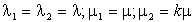
и обозначим  .
.
Состояния системы определяются парой (n, i), где n
- длина очереди, а i - номер режима. Занумеруем эти состояния последовательными
числами, каждому состоянию (n,i) при n  [0,
[0, + q], где q
=
+ q], где q
=  -
-  -
1, поставим в соответствие число n и каждому состоянию (n,
2) при n >
-
1, поставим в соответствие число n и каждому состоянию (n,
2) при n >  + q
поставим в соответствие число n + q.
+ q
поставим в соответствие число n + q.
Соотношения для стационарных вероятностей:

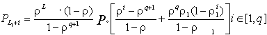

Средняя длина очереди:
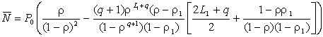
1.8. Двухфазная модель вычислительной системы с переменным режимом работы
Пусть замкнутая двухфазная СМО содержит m заявок, которые
обслуживаются в 2 режимах. Распределения длительностей обслуживания на первой
и второй фазах являются экспоненциальными с параметрами  и
и  (1 и 2 режим). Переход
из одного режима в другой происходит через экспоненциально распределенные промежутки
времени со средним 1/n , i=1,2.
(1 и 2 режим). Переход
из одного режима в другой происходит через экспоненциально распределенные промежутки
времени со средним 1/n , i=1,2.
Используя свойства отсутствия последействия, эту модель можно свести к однофазной СМО с конечным числом мест для ожидания, в которой:
в режиме i (i=1, 2,) входящий поток заявок является пуассоновским,
с параметром  ,
,
а длительность обслуживания имеет экспоненциальное распределение
со средним  .
.
Если {P(n1, n2, i)}, n1+ n2= m, - совместное стационарное
распределение числа заявок в очередях 1 и 2 двухфазной СМО в режиме i,
и { } - стационарное распределение
числа заявок в режиме i в соответствующей однофазной СМО с конечным числом
мест для ожидания, то:
} - стационарное распределение
числа заявок в режиме i в соответствующей однофазной СМО с конечным числом
мест для ожидания, то:
P(m - n, n, i) =  ;
i = 1; n = 0, 1, 2...m.
;
i = 1; n = 0, 1, 2...m.
1.9. Формулы для вычисления стационарных вероятностей
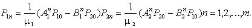


Вопросы для самопроверки
1. Какая цель создания очереди? Примеры очередей.
2. Какие программы называют последовательно используемыми?
3. Перечислите основные элементы системы массового обслуживания.
4. Какие существуют характеристики входящего потока заявок?
5. Что такое пропускная способность? Формула расчета.
6. Что отражают две самые важные формулы теории массового обслуживания?
7. Опишите систему М/М/1 с одноуровневым управлением.
8. Чем характеризуется качество обслуживания отдельного терминального пользователя?